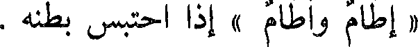
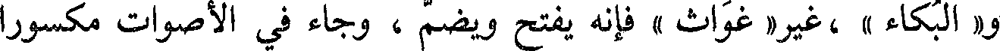
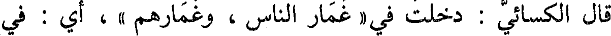
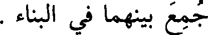
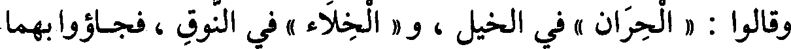
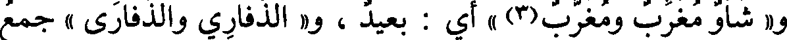
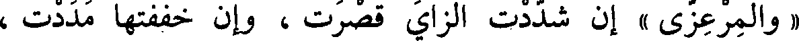
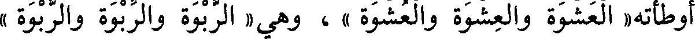
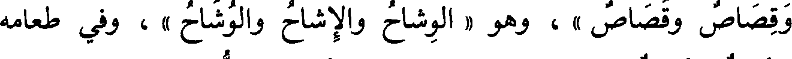

File: 000050.gt.txt (if the image is defective, simply delete all Arabic text and the line will be excluded)

« إطام وأطام » إذا احتبس بطنه .
File: 000051.gt.txt (if the image is defective, simply delete all Arabic text and the line will be excluded)

باب فعال وفعال
File: 000052.gt.txt (if the image is defective, simply delete all Arabic text and the line will be excluded)

« بالثوب(4)عوار وعوار » و« فواق الناقة وفواقها » : ما بين الحلبتين ،
File: 000053.gt.txt (if the image is defective, simply delete all Arabic text and the line will be excluded)

والصقر « قطامي وقطامي »، أجاب الله « غواثه وغواثه(5) » من الاستغاثة .
File: 000054.gt.txt (if the image is defective, simply delete all Arabic text and the line will be excluded)

ولم يأت في الأصوات إلا مضموما مثل « الحداء » و« الدعاء » ،
File: 000055.gt.txt (if the image is defective, simply delete all Arabic text and the line will be excluded)

و« البكاء » ،غير« غواث » فإنه يفتح ويضم ، وجاء في الأصوات مكسورا
File: 000056.gt.txt (if the image is defective, simply delete all Arabic text and the line will be excluded)

نحو(6)[571] « النداء » و« الصياح » وقد ضما أيضا .
File: 000057.gt.txt (if the image is defective, simply delete all Arabic text and the line will be excluded)

قال الكسائي : دخلت في « غمار الناس ، وغمارهم »، أي : في
File: 000058.gt.txt (if the image is defective, simply delete all Arabic text and the line will be excluded)

جماعتهم(8) وكذلك « خمار الناس وخمارهم » .
File: 000059.gt.txt (if the image is defective, simply delete all Arabic text and the line will be excluded)

قال(1) : والصناعة إنما هي بمنزلة الولاية للشيء والقيام به ؛ فلذلك
File: 000060.gt.txt (if the image is defective, simply delete all Arabic text and the line will be excluded)

جمع بينهما في البناء .
File: 000061.gt.txt (if the image is defective, simply delete all Arabic text and the line will be excluded)

قال(2) : وقد جاء « فعال » في أشياء تقاربت معانيها(3) ؛ فجيء بها
File: 000062.gt.txt (if the image is defective, simply delete all Arabic text and the line will be excluded)

[607] على مثال واحد ، وهو « الفرار » و « الشراد » و « النفار »
File: 000063.gt.txt (if the image is defective, simply delete all Arabic text and the line will be excluded)

و « الشماس » و« الطماح » ، و « الضراح »(4) مشبه بذلك ، والضرح(5) :
File: 000064.gt.txt (if the image is defective, simply delete all Arabic text and the line will be excluded)

الرمح ، ضرح أي رمح ؛ لأنه إذا ضرح باعدك ، و « الشباب » مشبه
File: 000065.gt.txt (if the image is defective, simply delete all Arabic text and the line will be excluded)

(6 بالشماس ، و« الخراط مشبه بالشراد ، و«العضاض» مشبه6) بالضراح .
File: 000066.gt.txt (if the image is defective, simply delete all Arabic text and the line will be excluded)

وقالوا : « الحران » في الخيل ، و« الخلاء » في النوق ، فجاءوابهما
File: 000067.gt.txt (if the image is defective, simply delete all Arabic text and the line will be excluded)

على هذا المثال؛ لأنهما فرق وتباعد من شيء يهاب، ولأنهما في العيوب
File: 000068.gt.txt (if the image is defective, simply delete all Arabic text and the line will be excluded)

بمنزلة ما تقدم .
File: 000069.gt.txt (if the image is defective, simply delete all Arabic text and the line will be excluded)

قال : وقد يأتي «فعال» في الوسوم، نحو «العلاط »
File: 000070.gt.txt (if the image is defective, simply delete all Arabic text and the line will be excluded)

و«الخباط(7)» و « العراض » و « الجناب » و « الكشاح » ، وهذه أسماء
File: 000071.gt.txt (if the image is defective, simply delete all Arabic text and the line will be excluded)

آثار(8) الوسوم .
File: 000072.gt.txt (if the image is defective, simply delete all Arabic text and the line will be excluded)

والمصدر منها(9) يأتي على « فعل » ، نحو(10): خبطته « خبطا »
File: 000073.gt.txt (if the image is defective, simply delete all Arabic text and the line will be excluded)

ويوم « الأربعاء » - بكسر الباء وفتح الهمزة (1) - وحكى الأصمعي
File: 000074.gt.txt (if the image is defective, simply delete all Arabic text and the line will be excluded)

« الأربعاء » بفتح الباء ، وحكاها ابن الأعرابي أيضا(2) .
File: 000075.gt.txt (if the image is defective, simply delete all Arabic text and the line will be excluded)

و« شأو مغرب ومغرب(3) » أي : بعيد ، و« الذفاري والذفارى » جمع
File: 000076.gt.txt (if the image is defective, simply delete all Arabic text and the line will be excluded)

ذفرى ، و« عذارى وعذاري » ، و« صحارى وصحاري » ، وهي « الطنفسة
File: 000077.gt.txt (if the image is defective, simply delete all Arabic text and the line will be excluded)

والطنفسة »، و« زبيل » مفوحة(4) الزاي ، فإن كسرتها زدت نونا فقلت زنبيل ،
File: 000078.gt.txt (if the image is defective, simply delete all Arabic text and the line will be excluded)

ولا يقال : زنبيل .
File: 000079.gt.txt (if the image is defective, simply delete all Arabic text and the line will be excluded)

«والمرعزى » إن شددت الزاي قصرت ، وإن خففتها مددت ،
File: 000080.gt.txt (if the image is defective, simply delete all Arabic text and the line will be excluded)

وكذلك « القبيطاء[589] والقبيطي(5) » الناطف ، و« الباقلى » أيضا .
File: 000081.gt.txt (if the image is defective, simply delete all Arabic text and the line will be excluded)

و« الحلي » إن شددت ضممت أوله ، وإن خففت فتحت أوله
File: 000082.gt.txt (if the image is defective, simply delete all Arabic text and the line will be excluded)

فقلت(6): « الحلى » . قال الفراء : الحلي جمع حلي ، مثل : وحى
File: 000083.gt.txt (if the image is defective, simply delete all Arabic text and the line will be excluded)

ووحي .
File: 000084.gt.txt (if the image is defective, simply delete all Arabic text and the line will be excluded)

و« قوباء » بفتح الواو مؤنثة لا تنصرف ، وجمعها قوب ، وإن سكنت
File: 000085.gt.txt (if the image is defective, simply delete all Arabic text and the line will be excluded)

الواو ذكرت وصرفت ، وهي « القلنسوة والقلنسية » إذا فتحت القاف ضممت
File: 000086.gt.txt (if the image is defective, simply delete all Arabic text and the line will be excluded)

السين وإذا ضممت القاف كسرت السين ؛ وهي « الإرزبة » : التي (7) يضرب
File: 000087.gt.txt (if the image is defective, simply delete all Arabic text and the line will be excluded)

بها - بالتشديد - فإن(8) قلتها بالميم خففت (9) فقلت(10) : مرزبة ، وأنشد
File: 000088.gt.txt (if the image is defective, simply delete all Arabic text and the line will be excluded)

قالوا « صفو الشيء » ففتحوا لا غير .
File: 000089.gt.txt (if the image is defective, simply delete all Arabic text and the line will be excluded)

قال الأصمعي : أخذت« صفوة الشيء وصفوه » كما يقال للصدر برك
File: 000090.gt.txt (if the image is defective, simply delete all Arabic text and the line will be excluded)

وبركة .
File: 000091.gt.txt (if the image is defective, simply delete all Arabic text and the line will be excluded)

أوطأته« العشوة والعشوة والعشوة » ، وهي « الربوة والربوة والربوة »
File: 000092.gt.txt (if the image is defective, simply delete all Arabic text and the line will be excluded)

للمكان المرتفع ، وهي « وجنة ووجنة ووجنة » ، و« جذوة من النار وجذوة
File: 000093.gt.txt (if the image is defective, simply delete all Arabic text and the line will be excluded)

وجذوة » ، و« جثوة وجثوة وجثوة » ، وهي« الغشوة والغشوة والغشوة » ، وفيه
File: 000094.gt.txt (if the image is defective, simply delete all Arabic text and the line will be excluded)

« غلظة وغلظة وغلظة » ، والحرب« خدعة وخدعة » زاد يونس
File: 000095.gt.txt (if the image is defective, simply delete all Arabic text and the line will be excluded)
فعال بثلاث لغات
File: 000096.gt.txt (if the image is defective, simply delete all Arabic text and the line will be excluded)

« وخدعة » .
File: 000097.gt.txt (if the image is defective, simply delete all Arabic text and the line will be excluded)

هو « الزجاج والزجاج والزجاج » ، وهو مقطوع « النخاع والنخاع
File: 000098.gt.txt (if the image is defective, simply delete all Arabic text and the line will be excluded)

والنخاع » وهو الأبيض الذي في جوف الفقار ، وهو « قصاص الشعر
File: 000099.gt.txt (if the image is defective, simply delete all Arabic text and the line will be excluded)

وقصاص وقصاص » ، وهو « الوشاح والإشاح والوشاح » ، وفي طعامه